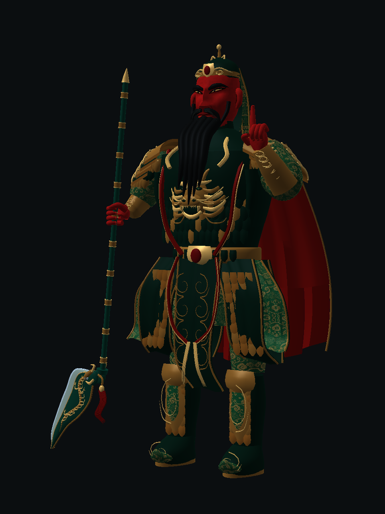
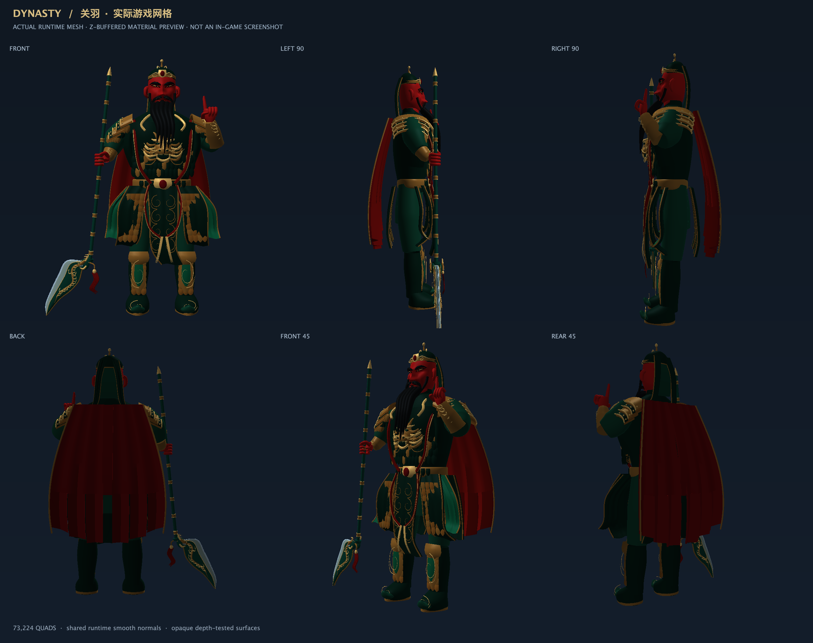
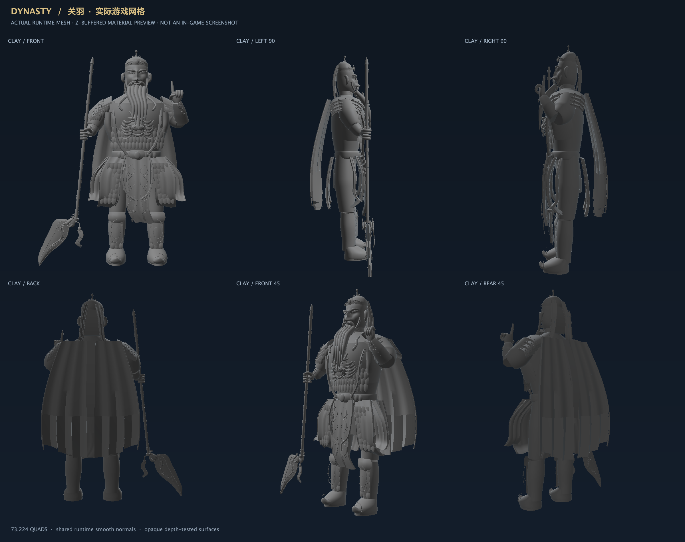

本轮仅关羽，后羿未改。以下全部来自实际程序网格；第一张使用生产 OpenGL 着色器和现有锦纹资源，仍是离线预览，不是游戏截图。

正面、左右 90°、背面、前后 45°。保留九格高度、握持位置和原有武器方向。

核对胸背厚度、五束长须、分层肩甲、独立甲裙和披风厚度，不靠贴图掩盖几何问题。

安装本轮构建的 dynasty-1.4.0.jar 后重启客户端。使用 /give @s dynasty:qinglong_dao，主手持刀并等待约两秒，按 F5 查看身后关羽。最好在测试世界的空地进行，并观察左右侧面、背面和远处轮廓。
没有覆盖正在使用的实例、建筑或存档。材质预览中的 before/after 文件名表示“关闭/开启锦纹材质”，不是旧模型/新模型对比。